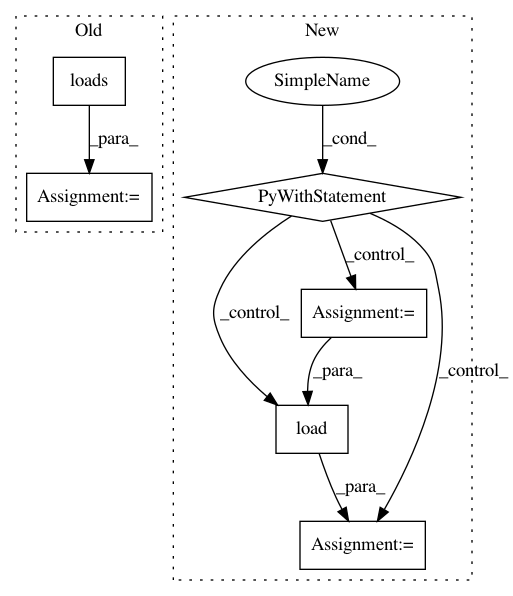

bf1495ab27933de58429bb643321fc3e21933d19,inferno/net.py,NeuralNet,__setstate__,#NeuralNet#Any#,734
Before Change
def __setstate__(self, state):
if "module_" in state:
module_dump = state.pop("module_")
module_ = pickle.loads(module_dump)
state["module_"] = module_
self.__dict__.update(state)
def save_params(self, f):
After Change
if "module_" in state:
module_dump = state.pop("module_")
with tempfile.SpooledTemporaryFile() as f:
f.write(module_dump)
f.seek(0)
if state["use_cuda"] and not torch.cuda.is_available():
warnings.warn(
"Model configured to use CUDA but no CUDA devices "
"available. Loading on CPU instead.",
ResourceWarning)
module_ = torch.load(f, map_location=lambda storage, loc: storage)
else:
module_ = torch.load(f)
state["module_"] = module_
self.__dict__.update(state)
def save_params(self, f):
In pattern: SUPERPATTERN
Frequency: 3
Non-data size: 6
Instances
Project Name: dnouri/skorch
Commit Name: bf1495ab27933de58429bb643321fc3e21933d19
Time: 2017-10-09
Author: marian.tietz@ottogroup.com
File Name: inferno/net.py
Class Name: NeuralNet
Method Name: __setstate__
Project Name: scikit-learn-contrib/categorical-encoding
Commit Name: 073e1b2326fd17b6b64db9bd06dc789c44373482
Time: 2018-09-08
Author: jan@motl.us
File Name: examples/benchmarking_large/arff_loader.py
Class Name:
Method Name: load
Project Name: scikit-learn-contrib/categorical-encoding
Commit Name: f1c220bd87fb50668974f60b1309fc4a5814ebe6
Time: 2018-10-08
Author: jan@motl.us
File Name: examples/benchmarking_large/arff_loader.py
Class Name:
Method Name: load